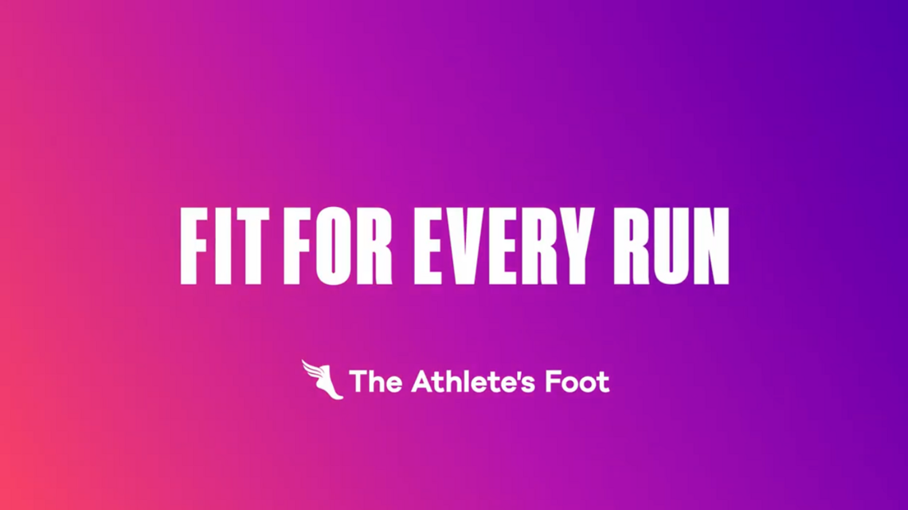
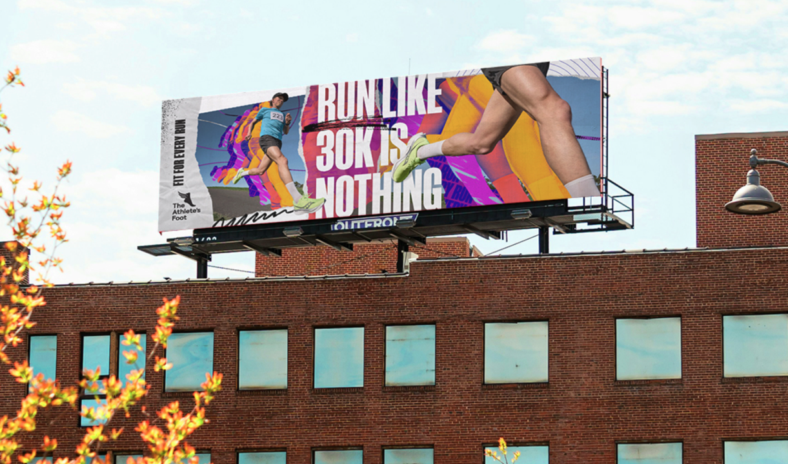
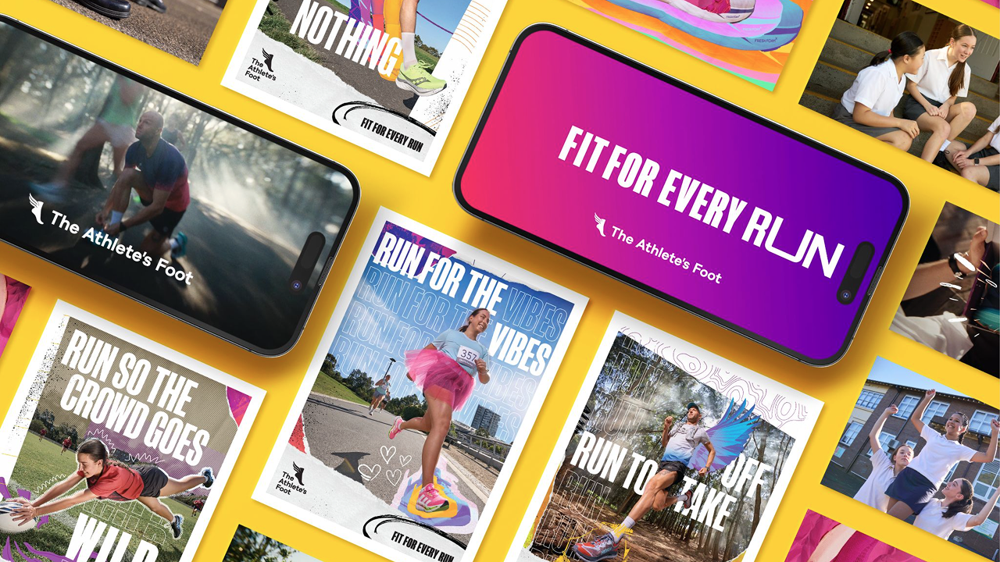

Overview
ICON partnered with The Athlete’s Foot to develop and execute two multi-channel creative campaigns — “Fit For Every Run” and “Back to School” — reinforcing the brand’s perfect-fit message while shifting from product-centric messaging to a lifestyle-driven narrative.
Background
The Athlete’s Foot had historically centred its marketing on television commercials. Together we set out to:
- Establish a consistent narrative across every channel
- Expand the story beyond product features
- Engage audiences through integrated campaigns
- Differentiate the brand through inclusivity
Fit For Every Run
The campaign celebrated the many interpretations of running — a triathlete chasing a personal best, a nurse on her feet all shift, a schoolchild racing the bell. Every one of them needs the right fit.
Spanning TVC, out-of-home, in-store, digital and social, the work moved the brand from talking about product to celebrating the people who move in it.


Back to School
“Back to School” extended the momentum, turning the lens on children’s lifestyles. Dynamic animation gave the cohesive brand world an energetic, playful twist — a 360-degree activation across cinema, out-of-home, in-store and social.

Results
The campaigns delivered on every objective:
- Strengthened brand perception around active lifestyles
- Enhanced engagement across every touchpoint
- Expanded reach and improved recall
- Positioned The Athlete’s Foot as an inclusive, movement-driven brand